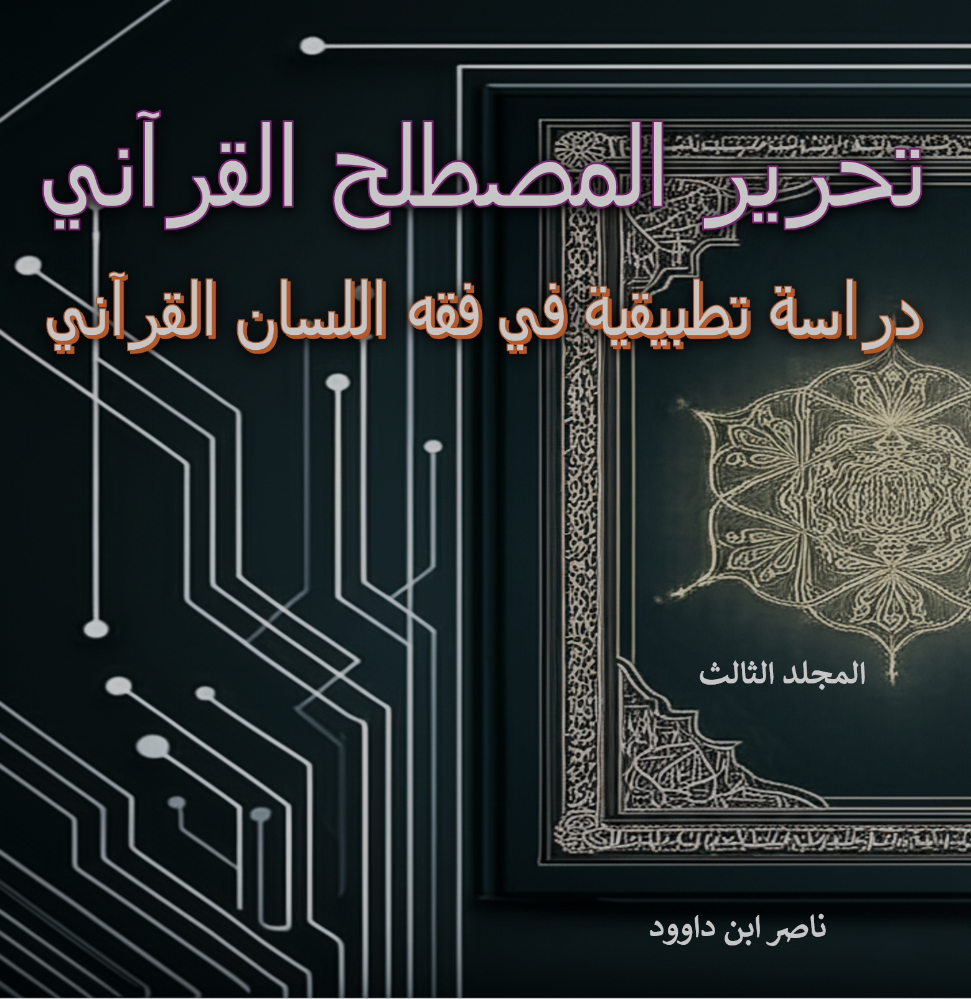

وصف الكتاب
يهدف هذا الكتاب إلى إعادة بناء صرح الفهم الصحيح للدين والحياة من خلال تصحيح المفاهيم السائدة وتقديم رؤى أصيلة للمصطلحات القرآنية، مستلهمة من جوهر اللسان القرآني.
يستند هذا الكتاب في منهجيته إلى الأسس النظرية والضوابط المنهجية التي تم تفصيلها في كتاب "فقه اللسان القرآني: منهج جديد لفهم النص والمخطوط".
وصف المجلد الثالث
بناءً على المقدمة والفهرس المرفقين، يمكن تقديم الوصف التالي للمجلد الثالث من كتاب "تحرير المصطلح القرآني: دراسة تطبيقية في فقه اللسان القرآني" للمهندس والباحث ناصر ابن داوود:
بناء النموذج المعرفي والحضاري
- مشروع الخلافة الإنساني: ينطلق المجلد من رؤية كلية تعتبر "الخلافة" هي غاية الوجود الإنساني، والقرآن هو الأداة لتحقيقها، ويعيد فهم الشعائر كأدوات وظيفية تخدم هذا المشروع.
- إعادة تعريف الكيان الإنساني: يقدم خريطة مفصلة للكيان الإنساني (الروح، القلب، الفؤاد، النفس، الصدر)، ويفرق بين "البشر" و"الإنسان" في رحلة الوعي، مما يؤسس لفهم أعمق للسلوك البشري.
تفكيك وإعادة بناء المنظومة الاجتماعية والأسرية
- العلاقات بين الجنسين: يقدم رؤية وظيفية لمفاهيم "الرجال" و"النساء" تتجاوز التقسيم البيولوجي.
- الزواج والطلاق: يعيد تعريف "الزواج" و"النكاح" كشراكة وظيفية، ويقدم فهماً للطلاق كعملية مؤسسية منظمة، كما يقدم قراءة جديدة للآيات التي اعتبرت أساساً لتعدد الزوجات وقصة زيد وزينب.
إعادة هيكلة المفاهيم الاقتصادية والأخلاقية
- مفهوم الرزق: يوسع مفهوم "الرزق" من العطاء المادي إلى الفيض الروحي والمعرفي.
- ميزان الحياة: يعتبر "الميزان" مفهوماً مركزياً، ويعيد تعريف "الربا" ليس كفائدة مالية بل كجريمة إخلال بهذا الميزان الكوني، ويربط "الزنا" بالخلل في نظام الحياة.
قراءة وجودية لمفاهيم الغيب والآخرة
- الجنة وجهنم: يقدمهما كحالات وجودية ونفسية يعيشها الإنسان الآن، وليست فقط جزاءً مؤجلاً.
- الموت والحياة: يفسر "الموتى" و"الأموات" بالموت الروحي والفكري، ويقدم فهماً رمزياً لقصص الخلق وإحياء الموتى.
تعميق المنهجية اللغوية والتدبرية
- شفرات قرآنية: يغوص في معاني الحروف المقطعة مثل "كهيعص"، والمصطلحات الدقيقة مثل "النسخ" (بمعنى البيان لا الإزالة)، و"الإنزال" و"التنزيل"، والفرق بين "التفسير والتأويل والتدبر".
- دعوة للتحرر الفكري: يؤكد مراراً على ضرورة استقلال العقل، ورفض التقليد الأعمى واتباع الأكثرية، ويدعو إلى منهجية "اخلع نعليك" للتجرد عند تدبر القرآن.
في جوهره، المجلد الثالث هو تتويج للرحلة، حيث لا يكتفي بتصحيح المفاهيم، بل يستخدمها لبناء منظومة فكرية وحياتية متكاملة ومترابطة، مقدماً للقارئ إطاراً قرآنياً شاملاً لفهم نفسه وعلاقته بالكون والخالق والمجتمع، ومختتماً المشروع بدعوة عملية لرقمنة المخطوطات كأداة لتمكين هذا الفهم الأصيل.
مميزات الكتاب
- دراسة تطبيقية متعمقة للمصطلحات القرآنية
- منهجية جديدة في فهم اللسان القرآني
- تحليل سياقي للآيات القرآنية
- رؤية شاملة لفقه المصطلحات القرآنية
- ربط المفاهيم القرآنية بالواقع المعاصر
- بناء نموذج معرفي وحضاري متكامل
- تفكيك وإعادة بناء المنظومة الاجتماعية
أبرز محتويات المجلد
المحور الأول: البناء المعرفي والحضاري
المحور الثاني: المنظومة الاجتماعية والأسرية
المحور الثالث: المفاهيم الاقتصادية والأخلاقية
المحور الرابع: المفاهيم الغيبية والوجودية
المحور الخامس: المنهجية اللغوية والتدبرية
لمن هذا المجلد؟
- الباحثون في الفكر الإسلامي: الذين يبحثون عن رؤى تجديدية للمشروع الحضاري الإسلامي
- المهتمون بالعلوم الإنسانية: الذين يدرسون النماذج المعرفية والمنظومات الاجتماعية
- المفكرون والفلاسفة: المهتمون بالرؤى الوجودية والمنهجيات المعرفية
- العاملون في مجال الإصلاح الاجتماعي: الذين يبحثون عن أسس قرآنية لإعادة بناء المجتمعات
- طلاب العلم الشرعي: الذين يرغبون في توسيع آفاق فهمهم للنص القرآني